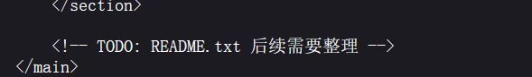
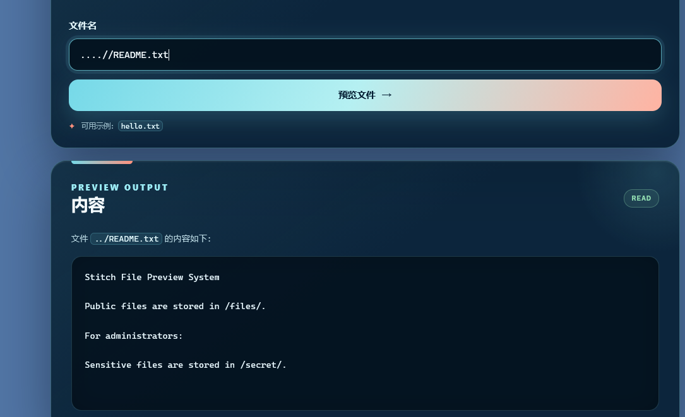
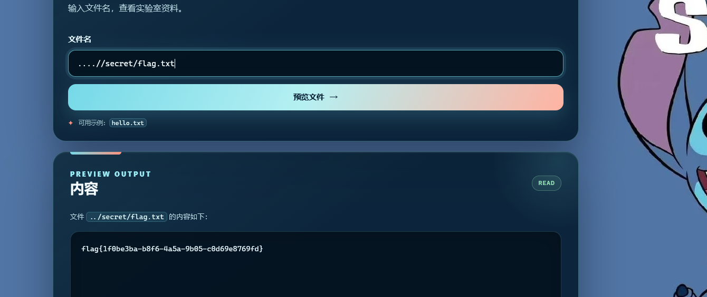

史迪仔的文件预览器 — Writeup
题目类型：Web — 目录穿越（Path Traversal）
题目地址：
http://80-e887e1a6-2d07-4b5b-9e6e-5d3e06543451.challenge.ctfplus.cn/Flag：
flag{1f0be3ba-b8f6-4a5a-9b05-c8d69e8769fd}
题目概述
页面是一个"文件预览器"，输入文件名即可查看实验室资料。默认提供示例文件 hello.txt。
解题过程
Step 1：查看默认文件
先访问默认的 hello.txt，内容如下：
没有有用信息，只是普通的欢迎语。
Step 2：查看源码，发现线索
右键查看页面源代码，在 HTML 底部发现一行注释：

这说明服务器上存在一个 README.txt 文件，但页面上没有直接暴露。
Step 3：直接读取 README.txt — 失败
在文件名输入框中输入 README.txt，返回：
说明 README.txt 不在当前可读目录中。
Step 4：尝试目录穿越
既然文件不在当前目录，尝试使用 ../ 进行目录穿越：
仍然返回 File not found.，说明服务器对 ../ 进行了过滤（替换为空）。
Step 5：绕过过滤 — 成功读取 README.txt
服务器只做了一次 ../ → 空的替换，可以利用双写绕过。输入：
服务器将中间的 ../ 删除后，剩余字符重新拼成 ../README.txt，成功读到文件内容：

Stitch File Preview System
Public files are stored in /files/.
For administrators:
Sensitive files are stored in /secret/.
README.txt 揭示了目录结构：
- 公开文件存储在
/files/ - 敏感文件存储在
/secret/
Step 6：读取 /secret/ 下的 flag
既然知道敏感文件在 /secret/ 目录下，CTF 中常见的 flag 文件名就是 flag.txt。使用同样的绕过方式构造路径：
成功拿到 flag：

解题思路总结
访问 hello.txt（无有用信息）
→ 查看源码，发现 HTML 注释提到 README.txt
→ 直接读 README.txt 失败（文件不在当前目录）
→ 尝试 ../ 目录穿越，失败（被过滤）
→ 用 ....// 双写绕过过滤，成功读取 README.txt
→ 发现敏感文件在 /secret/ 目录
→ ....//secret/flag.txt 读到 flag
漏洞原理
服务器对用户输入的 file 参数进行了简单的过滤 —— 将 ../ 替换为空字符串。但这个过滤只执行一次，攻击者可以通过双写 ....// 来绕过：
关键知识点
| 知识点 | 说明 |
|---|---|
| 查看源码 | HTML 注释中经常藏有线索 |
| 目录穿越 | 利用 ../ 跳出当前目录读取其他文件 |
| 过滤绕过 | 双写 ....// 绕过单次 ../ 替换过滤 |
| 信息收集 | 利用已读到的文件内容（README.txt）获取目录结构信息 |